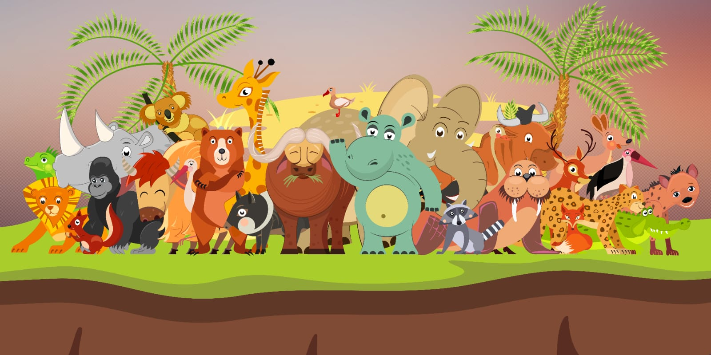

Apa Itu Fauna?
Fauna adalah seluruh jenis hewan yang hidup di suatu wilayah atau habitat tertentu. Keanekaragaman fauna sangat penting untuk menjaga keseimbangan ekosistem serta keberlangsungan kehidupan di bumi.
Fauna adalah seluruh jenis hewan yang hidup di suatu wilayah atau habitat tertentu. Keanekaragaman fauna sangat penting untuk menjaga keseimbangan ekosistem serta keberlangsungan kehidupan di bumi.